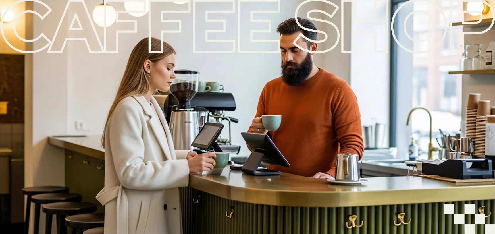
30% off
Taste the brew. Feel the space.
Explore now
Featured Categories
Curated flavor families for discovery, seasonal browsing, and coffee rituals.
Ethiopia Floral
Colombia Balanced
Guatemala Cocoa
India Spiced
Kenya Bright
Mexico Nutty
Rwanda Citrus
Costa Rica Caramel
Grain Origins
Coffee regions mapped by country and profile.
Brazil Velvety
Ethiopia Floral
Colombia Balanced
Guatemala Cocoa
India Spiced
Kenya Bright
Mexico Nutty
Rwanda Citrus
Costa Rica Caramel
09 / Roast guide
Our roasting
Light roast

SCA92pt

SCA86pt
Medium roast
Medium-dark
roast

SCA84pt

SCA79pt
Dark roast
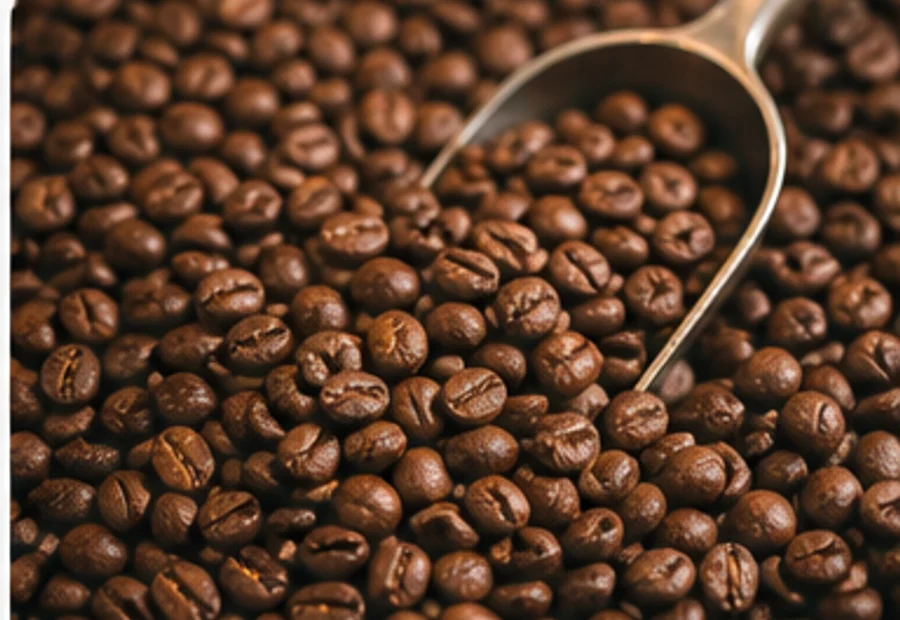
14 / ProcessWe make organic,
We make organic,
tasteful, and delicious
coffee beans.
From careful harvest to low-and-slow roasting, each step protects sweetness and clarity.
See our process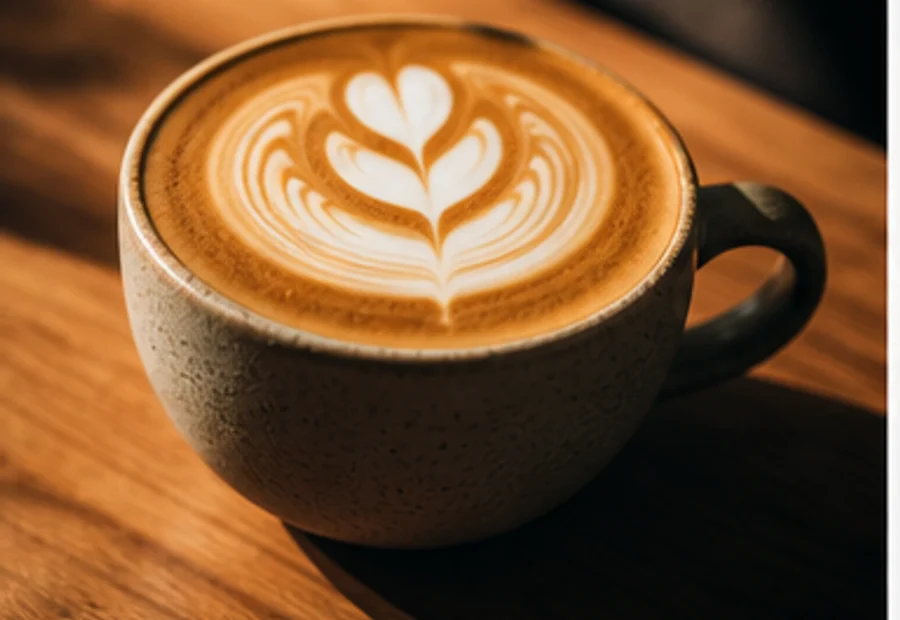
15 / Single originOur coffee
Our coffee
beans
Java Arabica brings cocoa sweetness, citrus lift, and a clean finish.
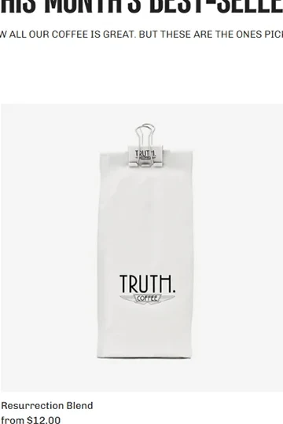
Special release$26 $18Add to cart
House Espresso
Brazil, Rwanda, and Colombia. Roasted for espresso and milk.
18 / BlendsColorful coffee,
Shop allColorful coffee,
serious flavor.
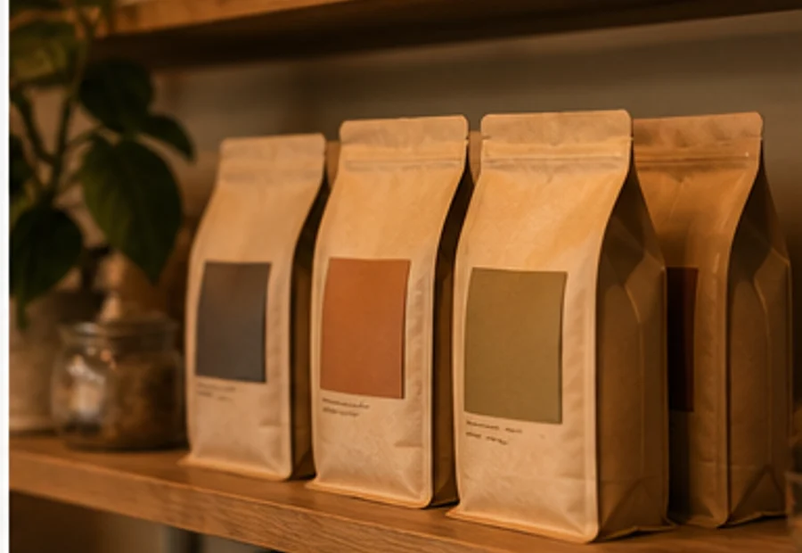
Morning Blend
Good Day
Dark Coffee
Decaf
20 / OriginWe believe
We believe
great coffee
Cafezi is Latin for soil. Our relationships begin with the people who understand the land best.
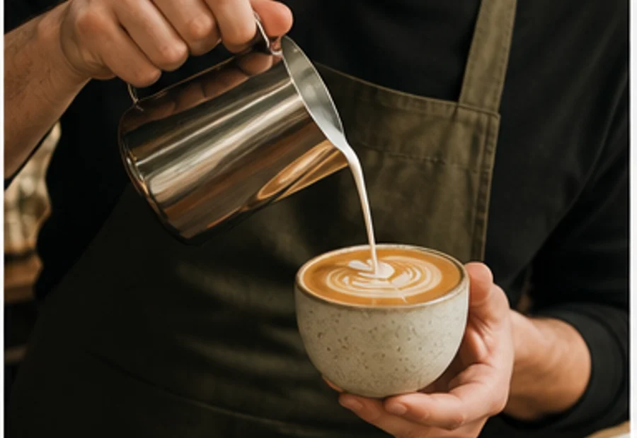
starts with
the earth
26 / Roaster's choice
Resurrection blend
Our pick of the month, selected for espresso and filter brewing.
Truth Coffee Roasting
Resurrection Blend
$12.00- Brazil Fazenda Paraiso Estate
- Ethiopia Yirgacheffe
- Colombia Huila
30 / Team
Meet the chefs
Chef Albert Benini
Albert brings classical pastry technique to Cafezi, balancing texture, restraint, and seasonal fruit.
Chef David Lax
David leads our savory kitchen with a focus on generous brunch dishes and clean, precise flavor.
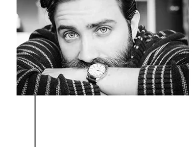
34 / Favorites
View allExplore what makes us special
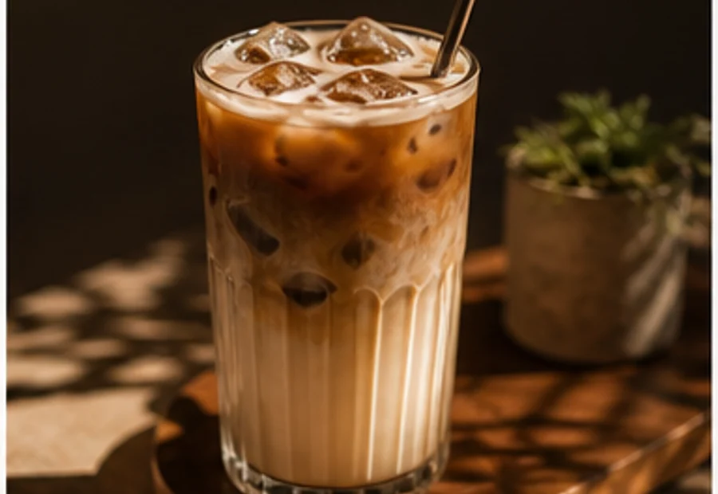
Iced coffee
Hot tea
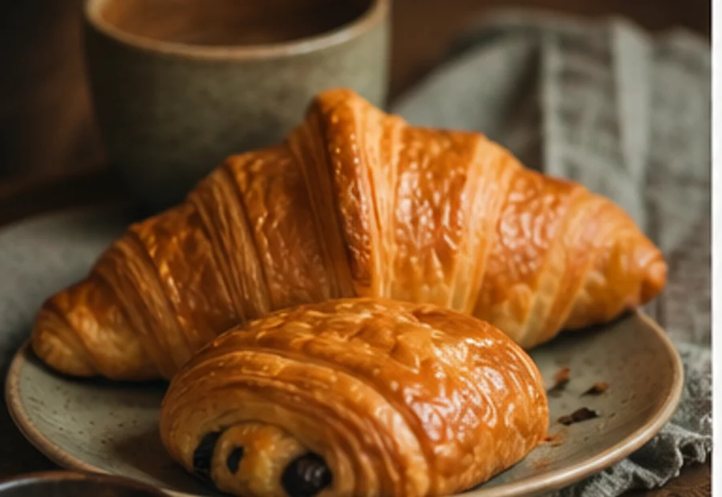
Waffle cone
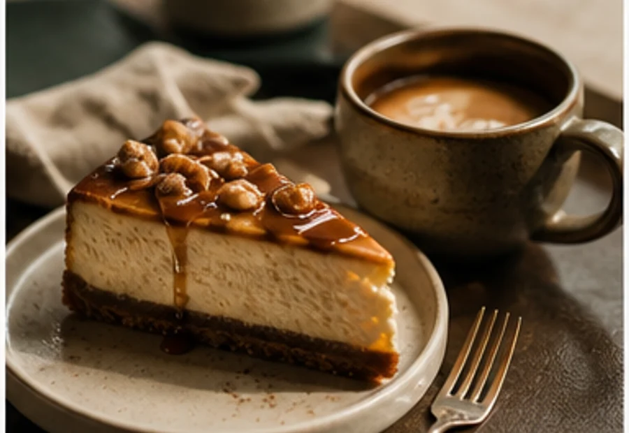
Brunch
01 / Cafezi
Luxury.
Built for the early cup, the long lunch, and the quiet hour between plans.
Our story02 / Your ritual
My latte.
Choose a favorite, take a familiar seat, and let the day move at its own pace.
Find your cupVisit Cafezi
Opening hours
- Monday
- 09:00–22:00
- Tuesday
- 09:00–22:00
- Wednesday
- 09:00–22:00
- Thursday
- 09:00–22:00
- Friday
- 09:00–23:00
- Weekend
- 08:00–23:00
Breakfast
Begin gently.
from $14Lunch
Stay awhile.
from $18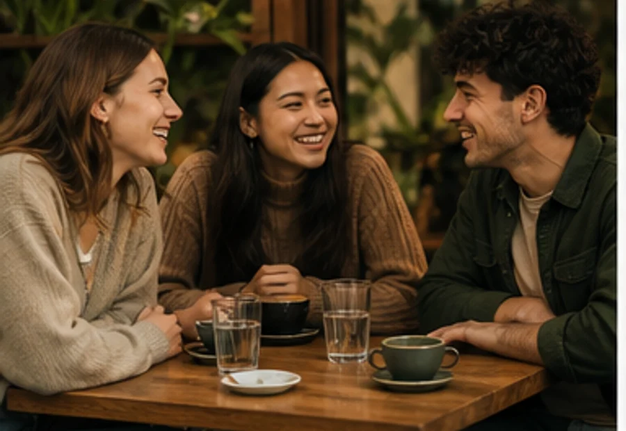
Burgers
Made to order.
from $20From the neighborhood
Our guests’ feedback.
“Cafezi gives every cup the care of a special occasion, without losing the ease of a neighborhood room.”
“The kind of place where the music, the service, and the espresso all feel perfectly tuned.”
“A generous menu, genuinely warm people, and a room that always makes space for one more.”
Roast guide
Coffee: build your base.
Six origins, six distinct expressions in the cup.
Velvety / Brazil
Floral / Ethiopia
Balanced / Colombia
Cocoa / Guatemala
Spiced / India
Bright / Kenya
Espresso
Dense and focused
Macchiato
Soft touch of milk
Flat white
Silky and balanced
Latte
Long and comforting
Cold brew
Clean and refreshing
A new chapter
We relocated our coffee-making life.
A brighter bar, a bigger shared table, and the same small-batch coffee you know.
Cafezi, with care.
Find the new roomCoffee beans
Coffee makes us severe, brave, and philosophical.
Freshly roasted coffees selected for sweetness, structure, and a generous finish.
Shop coffeeBrazilEthiopiaColombiaGuatemalaIndiaKenya
Subscribe to our newsletter
Las FloresBlue MoonMaracaturraEl DiabloPaksi BoritoMint LoganSensum
Good to know
Frequently asked questions
How do I choose a coffee?
Start with the flavors you enjoy; our team will match an origin and roast.
Do you roast every week?
Yes. Small batches are roasted throughout the week for freshness.
Can I reserve a table?
Yes. Use the reservation form above and we will confirm by email.
Is oat milk available?
Oat and almond milk are available for every espresso drink.
Do you offer decaf?
We serve a carefully selected sugarcane-process decaf.
Can I order whole beans?
Choose whole bean or ask us to grind for your preferred brewer.
Are pastries made daily?
Our pastry counter is replenished every morning and afternoon.
Do you host private events?
Our shared room can be reserved for selected evening gatherings.
COFFEE & GO